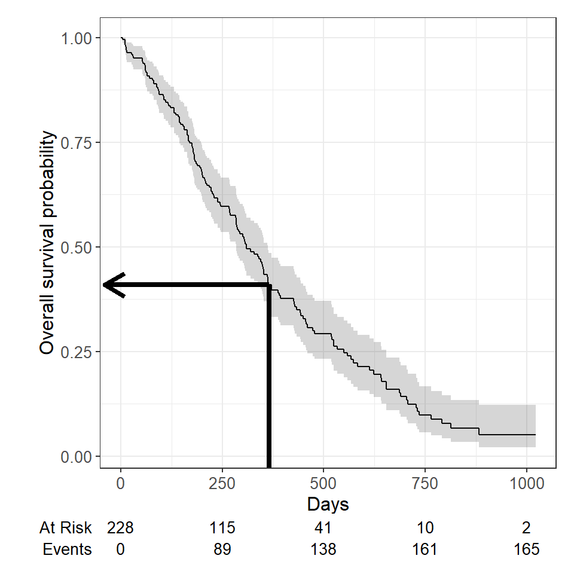
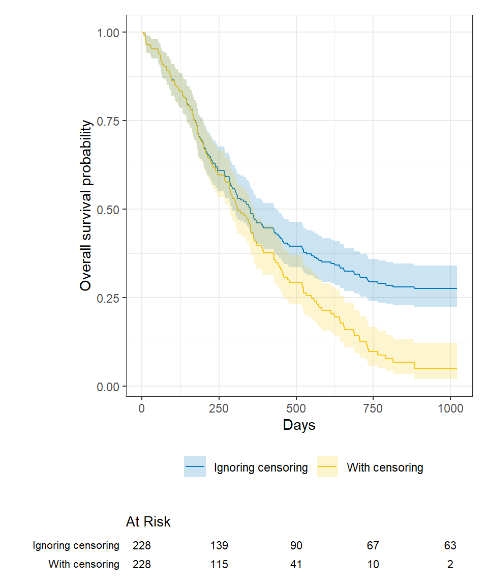
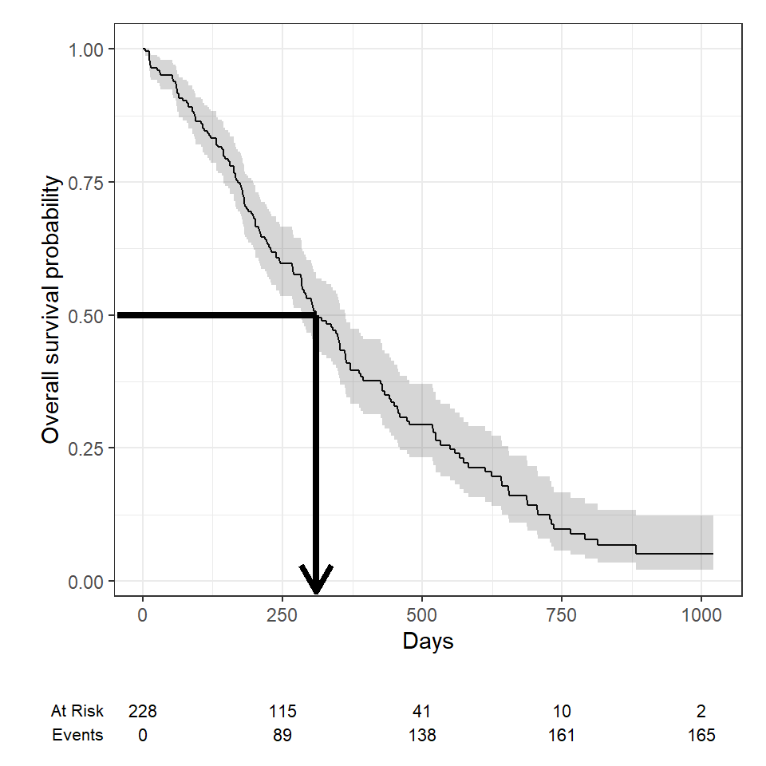
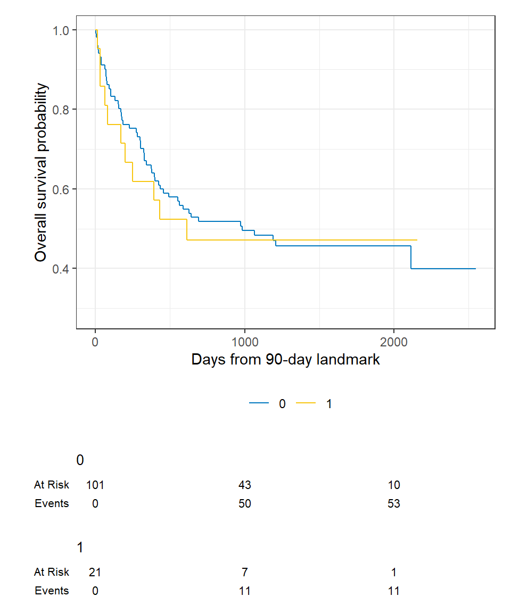
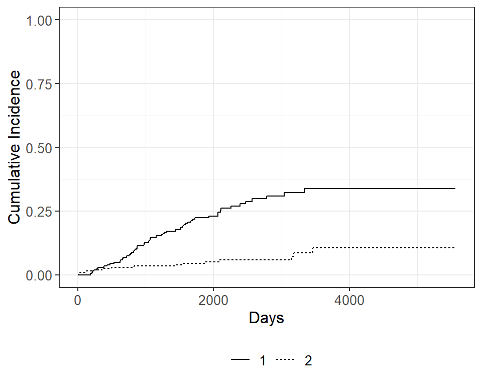
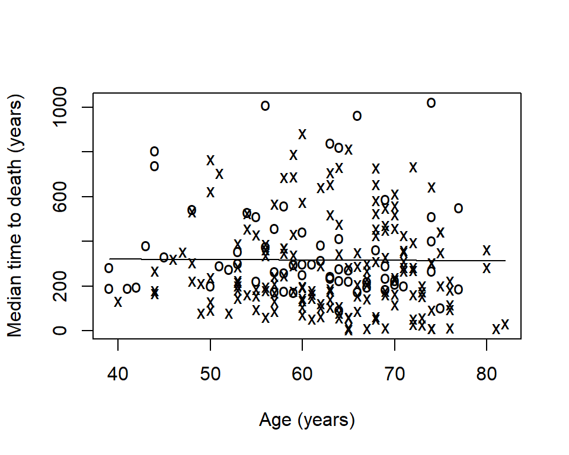

Survival Analysis in R
This tutorial provides an introduction to survival analysis, and to conducting a survival analysis in R. This tutorial was originally presented at the Memorial Sloan Kettering Cancer Center R-Presenters series on August 30, 2018. It was then modified for a more extensive training at Memorial Sloan Kettering Cancer Center in March, 2019. Updates, sometimes significant, are made when new functionality becomes available in R. This tutorial reflects my own opinions about the best functionality available in R for survival analysis.
Last updated: 2022-09-06
Part 1: Introduction to Survival Analysis
This presentation will cover some basics of survival analysis, and the following series of tutorial papers can be helpful for additional reading:
Clark, T., Bradburn, M., Love, S., & Altman, D. (2003). Survival analysis part I: Basic concepts and first analyses. 232-238. ISSN 0007-0920.
M J Bradburn, T G Clark, S B Love, & D G Altman. (2003). Survival Analysis Part II: Multivariate data analysis – an introduction to concepts and methods. British Journal of Cancer, 89(3), 431-436.
Bradburn, M., Clark, T., Love, S., & Altman, D. (2003). Survival analysis Part III: Multivariate data analysis – choosing a model and assessing its adequacy and fit. 89(4), 605-11.
Clark, T., Bradburn, M., Love, S., & Altman, D. (2003). Survival analysis part IV: Further concepts and methods in survival analysis. 781-786. ISSN 0007-0920.
The basics
Survival data are time-to-event data that consist of a distinct start time and end time.
Examples from cancer:
- Time from surgery to death
- Time from start of treatment to progression
- Time from response to recurrence
Time-to-event data are common in many other fields. Some other examples include:
- Time from HIV infection to development of AIDS
- Time to heart attack
- Time to onset of substance abuse
- Time to initiation of sexual activity
- Time to machine malfunction
Because time-to-event data are common in many fields, it also goes by names besides survival analysis including:
- Reliability analysis
- Duration analysis
- Event history analysis
- Time-to-event analysis
A key feature of survival data is censoring.

RICH JT, NEELY JG, PANIELLO RC, VOELKER CCJ, NUSSENBAUM B, WANG EW. A PRACTICAL GUIDE TO UNDERSTANDING KAPLAN-MEIER CURVES. Otolaryngology head and neck surgery: official journal of American Academy of Otolaryngology Head and Neck Surgery. 2010;143(3):331-336. doi:10.1016/j.otohns.2010.05.007.
A subject may be censored due to:
- Loss to follow-up
- Withdrawal from study
- No event by end of fixed study period
Specifically these are examples of right censoring. Left censoring and interval censoring are also possible, and methods exist to analyze these types of data, but this tutorial will be focus on right censoring.
To illustrate the impact of censoring, suppose we have the following data:

How would we compute the proportion who are event-free at 10 years?
- Subjects 6 and 7 were event-free at 10 years.
- Subjects 2, 9, and 10 had the event before 10 years.
- Subjects 1, 3, 4, 5, and 8 were censored before 10 years, so we don’t know whether they had the event or not at 10 years. But we know something about them - that they were each followed for a certain amount of time without the event of interest prior to being censored.
Survival analysis techniques provide a way to appropriately account for censored patients in the analysis.
Other reasons specialized analysis techniques are needed:
- The distribution of follow-up times is skewed, and may differ between censored patients and those with events
- Follow-up times are always positive
Example of the distribution of follow-up times according to event status:

To analyze survival data, we need to know the observed time \(Y_i\) and the event indicator \(\delta_i\). For subject \(i\):
- Observed time \(Y_i = \min(T_i, C_i)\) where \(T_i\) = event time and \(C_i\) = censoring time
- Event indicator \(\delta_i\) = 1 if event observed (i.e. \(T_i \leq C_i\)), = 0 if censored (i.e. \(T_i > C_i\))
The probability that a subject will survive beyond any given specified time
\[S(t) = Pr(T>t) = 1 - F(t)\]
\(S(t)\): survival function \(F(t) = Pr(T \leq t)\): cumulative distribution function
In theory the survival function is smooth; in practice we observe events on a discrete time scale.
The survival probability at a certain time, \(S(t)\), is a conditional probability of surviving beyond that time, given that an individual has survived just prior to that time. The survival probability can be estimated as the number of patients who are alive without loss to follow-up at that time, divided by the number of patients who were alive just prior to that time.
The Kaplan-Meier estimate of survival probability at a given time is the product of these conditional probabilities up until that given time.
At time 0, the survival probability is 1, i.e. \(S(t_0) = 1\).
Packages
In this section, we will use the following packages:
# install.packages(c("survival", "lubridate", "ggsurvfit", "gtsummary", "tidycmprsk"))
# remotes::install_github("zabore/condsurv")
library(survival)
library(lubridate)
library(ggsurvfit)
library(gtsummary)
library(tidycmprsk)
library(condsurv)The lung dataset
Throughout this section, we will use the lung dataset
from the {survival} package as example data. The data contain subjects
with advanced lung cancer from the North Central Cancer Treatment Group.
We will focus on the following variables throughout this tutorial:
- time: Observed survival time in days
- status: censoring status 1=censored, 2=dead
- sex: 1=Male, 2=Female
Note that the status is coded in a non-standard way in this dataset. Typically you will see 1=event, 0=censored. Let’s recode it to avoid confusion:
lung <-
lung %>%
mutate(
status = recode(status, `1` = 0, `2` = 1)
)Now we have:
- time: Observed survival time in days
- status: censoring status 0=censored, 1=dead
- sex: 1=Male, 2=Female
Here are the first 6 observations:
head(lung[, c("time", "status", "sex")])## time status sex
## 1 306 1 1
## 2 455 1 1
## 3 1010 0 1
## 4 210 1 1
## 5 883 1 1
## 6 1022 0 1Note: the Surv() function in the {survival}
package accepts by default TRUE/FALSE, where TRUE is event and FALSE is
censored; 1/0 where 1 is event and 0 is censored; or 2/1 where 2 is
event and 1 is censored. Please take care to ensure the event
indicator is properly formatted.
Calculating survival times
Data will often come with start and end dates rather than pre-calculated survival times. The first step is to make sure these are formatted as dates in R.
Let’s create a small example dataset with variables
sx_date for surgery date and last_fup_date for
the last follow-up date:
date_ex <-
tibble(
sx_date = c("2007-06-22", "2004-02-13", "2010-10-27"),
last_fup_date = c("2017-04-15", "2018-07-04", "2016-10-31")
)
date_ex## # A tibble: 3 × 2
## sx_date last_fup_date
## <chr> <chr>
## 1 2007-06-22 2017-04-15
## 2 2004-02-13 2018-07-04
## 3 2010-10-27 2016-10-31We see these are both character variables, but we need them to be formatted as dates.
We will use the {lubridate} package to work with dates. In this case,
we need to use the ymd() function to change the format,
since the dates are currently in the character format where the year
comes first, followed by the month, and followed by the day.
date_ex <-
date_ex %>%
mutate(
sx_date = ymd(sx_date),
last_fup_date = ymd(last_fup_date)
)
date_ex## # A tibble: 3 × 2
## sx_date last_fup_date
## <date> <date>
## 1 2007-06-22 2017-04-15
## 2 2004-02-13 2018-07-04
## 3 2010-10-27 2016-10-31Now we see that the two dates are formatted as date rather than as
character. Access the help page with ?ymd to see all date
format options.
Now that the dates are formatted, we need to calculate the difference
between start and end dates in some units, usually months or years.
Using the {lubridate} package, the operator %--% designates
a time interval, which is then converted to the number of elapsed
seconds using as.duration() and finally converted to years
by dividing by dyears(1), which gives the number of seconds
in a year.
date_ex <-
date_ex %>%
mutate(
os_yrs = as.duration(sx_date %--% last_fup_date) / dyears(1)
)
date_ex## # A tibble: 3 × 3
## sx_date last_fup_date os_yrs
## <date> <date> <dbl>
## 1 2007-06-22 2017-04-15 9.82
## 2 2004-02-13 2018-07-04 14.4
## 3 2010-10-27 2016-10-31 6.01Now we have our observed time for use in survival analysis.
Note: we need to load the {lubridate} package using a call
to library in order to be able to access the special
operators (similar to situation with pipes - i.e. we can’t use
lubridate::ymd() and then expect to use the special
operators).
Creating survival objects and curves
The Kaplan-Meier method is the most common way to estimate survival times and probabilities. It is a non-parametric approach that results in a step function, where there is a step down each time an event occurs.
The Surv() function from the {survival} package creates
a survival object for use as the response in a model formula. There will
be one entry for each subject that is the survival time, which is
followed by a + if the subject was censored. Let’s look at
the first 10 observations:
Surv(lung$time, lung$status)[1:10]## [1] 306 455 1010+ 210 883 1022+ 310 361 218 166We see that subject 1 had an event at time 306 days, subject 2 had an event at time 455 days, subject 3 was censored at time 1010 days, etc.
The survfit() function creates survival curves using the
Kaplan-Meier method based on a formula. Let’s generate the overall
survival curve for the entire cohort, assign it to object
s1, and look at the structure using str():
s1 <- survfit(Surv(time, status) ~ 1, data = lung)
str(s1)## List of 16
## $ n : int 228
## $ time : num [1:186] 5 11 12 13 15 26 30 31 53 54 ...
## $ n.risk : num [1:186] 228 227 224 223 221 220 219 218 217 215 ...
## $ n.event : num [1:186] 1 3 1 2 1 1 1 1 2 1 ...
## $ n.censor : num [1:186] 0 0 0 0 0 0 0 0 0 0 ...
## $ surv : num [1:186] 0.996 0.982 0.978 0.969 0.965 ...
## $ std.err : num [1:186] 0.0044 0.00885 0.00992 0.01179 0.01263 ...
## $ cumhaz : num [1:186] 0.00439 0.0176 0.02207 0.03103 0.03556 ...
## $ std.chaz : num [1:186] 0.00439 0.0088 0.00987 0.01173 0.01257 ...
## $ type : chr "right"
## $ logse : logi TRUE
## $ conf.int : num 0.95
## $ conf.type: chr "log"
## $ lower : num [1:186] 0.987 0.966 0.959 0.947 0.941 ...
## $ upper : num [1:186] 1 1 0.997 0.992 0.989 ...
## $ call : language survfit(formula = Surv(time, status) ~ 1, data = lung)
## - attr(*, "class")= chr "survfit"Some key components of this survfit object that will be
used to create survival curves include:
time: the timepoints at which the curve has a step, i.e. at least one event occurredsurv: the estimate of survival at the correspondingtime
Kaplan-Meier plots
We will use the {ggsurvfit} package to generate Kaplan-Meier plots. This package aims to ease plotting of time-to-event endpoints using the power of the {ggplot2} package. See http://www.danieldsjoberg.com/ggsurvfit/index.html for details.
Note: alternatively, survival plots can be created using base R or the {survminer} package.
The {ggsurvfit} package works best if you create the
survfit object using the included
ggsurvfit::survfit2() function, which uses similar syntax
to what we saw previously with survival::survfit().
survfit2(Surv(time, status) ~ 1, data = lung) %>%
ggsurvfit() +
labs(
x = "Days",
y = "Overall survival probability"
)
The default plot in ggsurvfit() shows the step function
only. We can add the confidence interval using
add_confidence_interval():
survfit2(Surv(time, status) ~ 1, data = lung) %>%
ggsurvfit() +
labs(
x = "Days",
y = "Overall survival probability"
) +
add_confidence_interval()
Typically we will also want to see the numbers at risk in a table
below the x-axis. We can add this using
add_risk_table():
survfit2(Surv(time, status) ~ 1, data = lung) %>%
ggsurvfit() +
labs(
x = "Days",
y = "Overall survival probability"
) +
add_confidence_interval() +
add_risktable()
Plots can be customized using many standard {ggplot2} options.
Estimating \(x\)-year survival
One quantity often of interest in a survival analysis is the probability of surviving beyond a certain number of years, \(x\).
For example, to estimate the probability of surviving to \(1\) year, use summary with the
times argument (Note: the time
variable in the lung data is actually in days, so we need
to use times = 365.25)
summary(survfit(Surv(time, status) ~ 1, data = lung), times = 365.25)## Call: survfit(formula = Surv(time, status) ~ 1, data = lung)
##
## time n.risk n.event survival std.err lower 95% CI upper 95% CI
## 365 65 121 0.409 0.0358 0.345 0.486We find that the \(1\)-year probability of survival in this study is 41%.
The associated lower and upper bounds of the 95% confidence interval are also displayed.
The \(1\)-year survival probability is the point on the y-axis that corresponds to \(1\) year on the x-axis for the survival curve.

What happens if you use a “naive” estimate?
121 of the 228 patients in the lung data died by \(1\) year so the “naive” estimate is
calculated as:
\[\Big(1 - \frac{121}{228}\Big) \times 100 = 47\%\] You get an incorrect estimate of the \(1\)-year probability of survival when you ignore the fact that 42 patients were censored before \(1\) year.
Recall the correct estimate of the \(1\)-year probability of survival, accounting for censoring using the Kaplan-Meier method, was 41%.
Ignoring censoring leads to an overestimate of the overall survival probability. Imagine two studies, each with 228 subjects. There are 165 deaths in each study. Censoring is ignored in one (pink line), censoring is accounted for in the other (blue line). The censored subjects only contribute information for a portion of the follow-up time, and then fall out of the risk set, thus pulling down the cumulative probability of survival. Ignoring censoring erroneously treats patients who are censored as part of the risk set for the entire follow-up period.

We can produce nice tables of \(x\)-time survival probability estimates
using the tbl_survfit() function from the {gtsummary}
package:
survfit(Surv(time, status) ~ 1, data = lung) %>%
tbl_survfit(
times = 365.25,
label_header = "1-year survival (95% CI)"
)| Characteristic | 1-year survival (95% CI) |
|---|---|
| Overall | 41% (34%, 49%) |
Estimating median survival time
Another quantity often of interest in a survival analysis is the average survival time, which we quantify using the median. Survival times are not expected to be normally distributed so the mean is not an appropriate summary.
We can obtain the median survival directly from the
survfit object:
survfit(Surv(time, status) ~ 1, data = lung)## Call: survfit(formula = Surv(time, status) ~ 1, data = lung)
##
## n events median 0.95LCL 0.95UCL
## [1,] 228 165 310 285 363We see the median survival time is 310 days The lower and upper bounds of the 95% confidence interval are also displayed.
Median survival is the time corresponding to a survival probability of \(0.5\):

What happens if you use a “naive” estimate?
Summarize the median survival time among the 165 patients who died:
lung %>%
filter(status == 1) %>%
summarize(median_surv = median(time))## median_surv
## 1 226You get an incorrect estimate of median survival time of 226 days when you ignore the fact that censored patients also contribute follow-up time.
Recall the correct estimate of median survival time is 310 days.
Ignoring censoring will lead to an underestimate of
median survival time because the follow-up time that censored patients
contribute is excluded (pink line). The true survival curve accounting
for censoring in the lung data is shown in blue for
comparison.

We can produce nice tables of median survival time estimates using
the tbl_survfit() function from the {gtsummary}
package:
survfit(Surv(time, status) ~ 1, data = lung) %>%
tbl_survfit(
probs = 0.5,
label_header = "Median survival (95% CI)"
)| Characteristic | Median survival (95% CI) |
|---|---|
| Overall | 310 (285, 363) |
Comparing survival times between groups
We can conduct between-group significance tests using a log-rank
test. The log-rank test equally weights observations over the entire
follow-up time and is the most common way to compare survival times
between groups. There are versions that more heavily weight the early or
late follow-up that could be more appropriate depending on the research
question (see ?survdiff for different test options).
We get the log-rank p-value using the survdiff function.
For example, we can test whether there was a difference in survival time
according to sex in the lung data:
survdiff(Surv(time, status) ~ sex, data = lung)## Call:
## survdiff(formula = Surv(time, status) ~ sex, data = lung)
##
## N Observed Expected (O-E)^2/E (O-E)^2/V
## sex=1 138 112 91.6 4.55 10.3
## sex=2 90 53 73.4 5.68 10.3
##
## Chisq= 10.3 on 1 degrees of freedom, p= 0.001We see that there was a significant difference in overall survival
according to sex in the lung data, with a p-value of p =
0.001.
The Cox regression model
We may want to quantify an effect size for a single variable, or include more than one variable into a regression model to account for the effects of multiple variables.
The Cox regression model is a semi-parametric model that can be used to fit univariable and multivariable regression models that have survival outcomes.
\[h(t|X_i) = h_0(t) \exp(\beta_1 X_{i1} + \cdots + \beta_p X_{ip})\]
\(h(t)\): hazard, or the instantaneous rate at which events occur \(h_0(t)\): underlying baseline hazard
Some key assumptions of the model:
- non-informative censoring
- proportional hazards
Note: parametric regression models for survival outcomes are also available, but they won’t be addressed in this tutorial
We can fit regression models for survival data using the
coxph() function from the {survival} package, which takes a
Surv() object on the left hand side and has standard syntax
for regression formulas in R on the right hand side.
coxph(Surv(time, status) ~ sex, data = lung)## Call:
## coxph(formula = Surv(time, status) ~ sex, data = lung)
##
## coef exp(coef) se(coef) z p
## sex -0.5310 0.5880 0.1672 -3.176 0.00149
##
## Likelihood ratio test=10.63 on 1 df, p=0.001111
## n= 228, number of events= 165We can obtain tables of results using the
tbl_regression() function from the {gtsummary} package,
with the option to exponentiate set to TRUE to return the hazard ratio
rather than the log hazard ratio:
coxph(Surv(time, status) ~ sex, data = lung) %>%
tbl_regression(exp = TRUE) | Characteristic | HR1 | 95% CI1 | p-value |
|---|---|---|---|
| sex | 0.59 | 0.42, 0.82 | 0.001 |
| 1 HR = Hazard Ratio, CI = Confidence Interval | |||
The quantity of interest from a Cox regression model is a hazard ratio (HR). The HR represents the ratio of hazards between two groups at any particular point in time. The HR is interpreted as the instantaneous rate of occurrence of the event of interest in those who are still at risk for the event. It is not a risk, though it is commonly mis-interpreted as such. If you have a regression parameter \(\beta\), then HR = \(\exp(\beta)\).
A HR < 1 indicates reduced hazard of death whereas a HR > 1 indicates an increased hazard of death.
So the HR = 0.59 implies that 0.59 times as many females are dying as males, at any given time. Stated differently, females have a significantly lower hazard of death than males in these data.
Part 2: Landmark Analysis and Time Dependent Covariates
In Part 1 we covered using log-rank tests and Cox regression to examine associations between covariates of interest and survival outcomes. But these analyses rely on the covariate being measured at baseline, that is, before follow-up time for the event begins. What happens if you are interested in a covariate that is measured after follow-up time begins?
Example: Overall survival is measured from treatment start, and interest is in the association between complete response to treatment and survival.
Anderson et al (JCO, 1983) described why traditional methods such as log-rank tests or Cox regression are biased in favor of responders in this scenario, and proposed the landmark approach. The null hypothesis in the landmark approach is that survival from landmark does not depend on response status at landmark.
Anderson, J., Cain, K., & Gelber, R. (1983). Analysis of survival by tumor response. Journal of Clinical Oncology : Official Journal of the American Society of Clinical Oncology, 1(11), 710-9.
Some other possible covariates of interest in cancer research that may not be measured at baseline include:
- tranplant failure
- graft versus host disease
- second resection
- adjuvant therapy
- compliance
- adverse events
The BMT dataset
Throughout this section we will use the BMT dataset from
{SemiCompRisks} package as an example dataset. The data consist of 137
bone marrow transplant patients. Variables of interest include:
T1time (in days) to death or last follow-updelta1death indicator; 1=Dead, 0=AliveTAtime (in days) to acute graft-versus-host diseasedeltaAacute graft-versus-host disease indicator; 1-Developed acute graft-versus-host disease, 0-Never developed acute graft-versus-host disease
First, load the data for use in examples throughout:
# install.packages("SemiCompRisks)
data(BMT, package = "SemiCompRisks")Here are the first 6 observations:
head(BMT[, c("T1", "delta1", "TA", "deltaA")])## T1 delta1 TA deltaA
## 1 2081 0 67 1
## 2 1602 0 1602 0
## 3 1496 0 1496 0
## 4 1462 0 70 1
## 5 1433 0 1433 0
## 6 1377 0 1377 0Landmark approach
- Select a fixed time after baseline as your landmark time. Note: this should be done based on clinical information, prior to data inspection
- Subset population for those followed at least until landmark time. Note: always report the number excluded due to the event of interest or censoring prior to the landmark time.
- Calculate follow-up from landmark time and apply traditional log-rank tests or Cox regression.
In the BMT data, interest is in the association between
acute graft versus host disease (aGVHD) and survival. But aGVHD is
assessed after the transplant, which is our baseline, or start of
follow-up, time.
Step 1 Select landmark time
Typically aGVHD occurs within the first 90 days following transplant, so we use a 90-day landmark.
Step 2 Subset population for those followed at least until landmark time
lm_dat <-
BMT %>%
filter(T1 >= 90) We exclude 15 patients who were not followed until the landmark time of 90 days.
Note: All 15 excluded patients died before the 90 day landmark.
Step 3 Calculate follow-up time from landmark and apply traditional methods.
lm_dat <-
lm_dat %>%
mutate(
lm_T1 = T1 - 90
)survfit2(Surv(lm_T1, delta1) ~ deltaA, data = lm_dat) %>%
ggsurvfit() +
labs(
x = "Days from 90-day landmark",
y = "Overall survival probability"
) +
add_risktable()
In Cox regression you can use the subset option in
coxph to exclude those patients who were not followed
through the landmark time, and we can view the results using the
tbl_regression() function from the {gtsummary} package:
coxph(
Surv(T1, delta1) ~ deltaA,
subset = T1 >= 90,
data = BMT
) %>%
tbl_regression(exp = TRUE)| Characteristic | HR1 | 95% CI1 | p-value |
|---|---|---|---|
| deltaA | 1.08 | 0.57, 2.07 | 0.8 |
| 1 HR = Hazard Ratio, CI = Confidence Interval | |||
Time-dependent covariate approach
An alternative to a landmark analysis is incorporation of a time-dependent covariate. This may be more appropriate than landmark analysis when:
- the value of a covariate is changing over time
- there is not an obvious landmark time
- use of a landmark would lead to many exclusions
Analysis of time-dependent covariates requires setup of a special dataset, in a format known as counting process format. See the detailed paper on this by the author of the {survival} package Using Time Dependent Covariates and Time Dependent Coefficients in the Cox Model.
There was no ID variable in the BMT data, which is
needed to create the special dataset, so create an ID variable called
my_id:
BMT <- rowid_to_column(BMT, "my_id")Use the tmerge function with the event and
tdc function options to create the special dataset.
tmerge()creates a long dataset with multiple time intervals for the different covariate values for each patientevent()creates the new event indicator to go with the newly created time intervalstdc()creates the time-dependent covariate indicator to go with the newly created time intervals
td_dat <-
tmerge(
data1 = BMT %>% select(my_id, T1, delta1),
data2 = BMT %>% select(my_id, T1, delta1, TA, deltaA),
id = my_id,
death = event(T1, delta1),
agvhd = tdc(TA)
)To see what this does, let’s look at the data for the first 5 individual patients. The variables of interest in the original data looked like:
## my_id T1 delta1 TA deltaA
## 1 1 2081 0 67 1
## 2 2 1602 0 1602 0
## 3 3 1496 0 1496 0
## 4 4 1462 0 70 1
## 5 5 1433 0 1433 0The new dataset for these same patients looks like:
## my_id T1 delta1 tstart tstop death agvhd
## 1 1 2081 0 0 67 0 0
## 2 1 2081 0 67 2081 0 1
## 3 2 1602 0 0 1602 0 0
## 4 3 1496 0 0 1496 0 0
## 5 4 1462 0 0 70 0 0
## 6 4 1462 0 70 1462 0 1
## 7 5 1433 0 0 1433 0 0We see that patients 1 and 4 now have multiple rows of data because they both developed aGVHD at some point in time after baseline.
Now we can analyze this time-dependent covariate as usual using Cox
regression with coxph and an alteration to our use of
Surv to include arguments to both time and
time2:
coxph(
Surv(time = tstart, time2 = tstop, event = death) ~ agvhd,
data = td_dat
) %>%
tbl_regression(exp = TRUE)| Characteristic | HR1 | 95% CI1 | p-value |
|---|---|---|---|
| agvhd | 1.40 | 0.81, 2.43 | 0.2 |
| 1 HR = Hazard Ratio, CI = Confidence Interval | |||
We find that acute graft versus host disease is not significantly associated with death using either landmark analysis or a time-dependent covariate.
Often one will want to use landmark analysis for visualization of a single covariate, and Cox regression with a time-dependent covariate for univariable and multivariable modeling.
Part 3: Competing Risks
Competing risks analyses may be used when subjects have multiple possible events in a time-to-event setting.
Examples:
- recurrence
- death from disease
- death from other causes
- treatment response
All or some of these (among others) may be possible events in any given study.
The fundamental problem that may lead to the need for specialized statistical methods is unobserved dependence among the various event times. For example, one can imagine that patients who recur are more likely to die, and therefore times to recurrence and times to death would not be independent events.
There are two approaches to analysis in the presence of multiple potential outcomes:
- Cause-specific hazard of a given event: this represents the rate per unit of time of the event among those not having failed from other events
- Subdistribution hazard of a given event: this represents the rate per unit of time of the event as well as the influence of competing events
Each of these approaches may only illuminate one important aspect of the data while possibly obscuring others, and the chosen approach should depend on the question of interest.
When the events are independent (almost never true), cause-specific hazards is unbiased. When the events are dependent, a variety of results can be obtained depending on the setting.
Cumulative incidence using 1 minus the Kaplan-Meier estimate is always >= cumulative incidence using competing risks methods, so can only lead to an overestimate of the cumulative incidence, though the amount of overestimation depends on event rates and dependence among events.
To establish that a covariate is indeed acting on the event of interest, cause-specific hazards may be preferred for treatment or prognostic marker effect testing. To establish overall benefit, subdistribution hazards may be preferred for building prognostic nomograms or considering health economic effects to get a better sense of the influence of treatment and other covariates on an absolute scale.
Some references:
Dignam JJ, Zhang Q, Kocherginsky M. The use and interpretation of competing risks regression models. Clin Cancer Res. 2012;18(8):2301-8.
Kim HT. Cumulative incidence in competing risks data and competing risks regression analysis. Clin Cancer Res. 2007 Jan 15;13(2 Pt 1):559-65.
Satagopan JM, Ben-Porat L, Berwick M, Robson M, Kutler D, Auerbach AD. A note on competing risks in survival data analysis. Br J Cancer. 2004;91(7):1229-35.
Austin, P., & Fine, J. (2017). Practical recommendations for reporting Fine‐Gray model analyses for competing risk data. Statistics in Medicine, 36(27), 4391-4400.
We can obtain the cause-specific hazard of a given event using the methods introduced in the previous section, where the event of interest counts as an event and any competing events are censored at the date of the competing even.
The rest of this section will focus on methods for subdistribtuion hazards.
The primary package we will use for competing risks analysis is the {tidycmprsk} package.
The Melanoma dataset
We will use the Melanoma data from the {MASS} package to
illustrate these concepts. It contains variables:
timesurvival time in days, possibly censored.status1 died from melanoma, 2 alive, 3 dead from other causes.sex1 = male, 0 = female.ageage in years.yearof operation.thicknesstumor thickness in mm.ulcer1 = presence, 0 = absence.
# install.packages("MASS")
data(Melanoma, package = "MASS")The status variable in these data are coded in a
non-standard way. Let’s recode to avoid confusion:
Melanoma <-
Melanoma %>%
mutate(
status = as.factor(recode(status, `2` = 0, `1` = 1, `3` = 2))
)Now we have:
status0=alive, 1=died from melanoma, 2=dead from other causes.
Here are the first 6 patients:
head(Melanoma)## time status sex age year thickness ulcer
## 1 10 2 1 76 1972 6.76 1
## 2 30 2 1 56 1968 0.65 0
## 3 35 0 1 41 1977 1.34 0
## 4 99 2 0 71 1968 2.90 0
## 5 185 1 1 52 1965 12.08 1
## 6 204 1 1 28 1971 4.84 1Cumulative incidence for competing risks
A non-parametric estimate of the cumulative incidence of the event of interest. At any point in time, the sum of the cumulative incidence of each event is equal to the total cumulative incidence of any event (not true in the cause-specific setting). Gray’s test is a modified Chi-squared test used to compare 2 or more groups.
Estimate the cumulative incidence in the context of competing risks
using the cuminc function from the {tidycmprsk} package. By
default this requires the status to be a factor variable with censored
patients coded as 0.
cuminc(Surv(time, status) ~ 1, data = Melanoma)##
## time n.risk estimate std.error 95% CI
## 1,000 171 0.127 0.023 0.086, 0.177
## 2,000 103 0.230 0.030 0.174, 0.291
## 3,000 54 0.310 0.037 0.239, 0.383
## 4,000 13 0.339 0.041 0.260, 0.419
## 5,000 1 0.339 0.041 0.260, 0.419
##
## time n.risk estimate std.error 95% CI
## 1,000 171 0.034 0.013 0.015, 0.066
## 2,000 103 0.050 0.016 0.026, 0.087
## 3,000 54 0.058 0.017 0.030, 0.099
## 4,000 13 0.106 0.032 0.053, 0.179
## 5,000 1 0.106 0.032 0.053, 0.179We can use the ggcuminc() function from the {ggsurvfit}
package to plot the cumulative incidence. By default it plots the first
event type only. So the following plot shows the cumulative incidence of
death from melanoma:
cuminc(Surv(time, status) ~ 1, data = Melanoma) %>%
ggcuminc() +
labs(
x = "Days"
) +
add_confidence_interval() +
add_risktable()
If we want to include both event types, we can call the
autoplot() function from the {tidycmprsk} package:
cuminc(Surv(time, status) ~ 1, data = Melanoma) %>%
autoplot(outcomes = c("1", "2")) +
labs(
x = "Days",
y = "Cumulative Incidence",
linetype = "Event type"
) +
ylim(c(0, 1))
Now let’s say we wanted to examine death from melanoma or other
causes in the Melanoma data, according to
ulcer, the presence or absence of ulceration. We can
estimate the cumulative incidence at various times by group and display
that in a table using the tbl_cuminc() function from the
{tidycmprsk} package, and add Gray’s test to test for a difference
between groups over the entire follow-up period using the
add_p() function.
cuminc(Surv(time, status) ~ ulcer, data = Melanoma) %>%
tbl_cuminc(
times = 1826.25,
label_header = "**{time/365.25}-year cuminc**") %>%
add_p()| Characteristic | 5-year cuminc | p-value1 |
|---|---|---|
| ulcer | <0.001 | |
| 0 | 9.1% (4.6%, 15%) | |
| 1 | 39% (29%, 49%) | |
| 1 Gray's Test | ||
Then we can see the plot of death due to melanoma, according to
ulceration status, as before using ggcuminc() from the
{ggsurvfit} package:
cuminc(Surv(time, status) ~ ulcer, data = Melanoma) %>%
ggcuminc() +
labs(
x = "Days"
) +
add_confidence_interval() +
add_risktable()
Competing risks regression
There are two approaches to competing risks regression:
- Cause-specific hazards
- instantaneous rate of occurrence of the given type of event in subjects who are currently event‐free
- estimated using Cox regression (
coxphfunction)
- Subdistribution hazards
- instantaneous rate of occurrence of the given type of event in subjects who have not yet experienced an event of that type
- estimated using Fine-Gray regression (
crrfunction)
Let’s say we’re interested in looking at the effect of age and sex on death from melanoma, with death from other causes as a competing event.
The crr() function from the {tidycmprsk} package will
estimate the subdistribution hazards.
crr(Surv(time, status) ~ sex + age, data = Melanoma)##
## Variable Coef SE HR 95% CI p-value
## sex 0.588 0.272 1.80 1.06, 3.07 0.030
## age 0.013 0.009 1.01 0.99, 1.03 0.18And we can generate tables of formatted results using the
tbl_regression() function from the {gtsummary} package,
with the option exp = TRUE to obtain the hazard ratio
estimates:
crr(Surv(time, status) ~ sex + age, data = Melanoma) %>%
tbl_regression(exp = TRUE)| Characteristic | HR1 | 95% CI1 | p-value |
|---|---|---|---|
| sex | 1.80 | 1.06, 3.07 | 0.030 |
| age | 1.01 | 0.99, 1.03 | 0.2 |
| 1 HR = Hazard Ratio, CI = Confidence Interval | |||
We see that male sex (recall that 1=male, 0=female in these data) is significantly associated with increased hazard of death due to melanoma, whereas age was not significantly associated with death due to melanoma.
Alternatively, if we wanted to use the cause-specific hazards
regression approach, we first need to censor all subjects who didn’t
have the event of interest, in this case death from melanoma, and then
use coxph as before. So patients who died from other causes
are now censored for the cause-specific hazard approach to competing
risks. Again we generate a table of formatted results using the
tbl_regression() function from the {gtsummary} package:
coxph(
Surv(time, ifelse(status == 1, 1, 0)) ~ sex + age,
data = Melanoma
) %>%
tbl_regression(exp = TRUE)| Characteristic | HR1 | 95% CI1 | p-value |
|---|---|---|---|
| sex | 1.82 | 1.08, 3.07 | 0.025 |
| age | 1.02 | 1.00, 1.03 | 0.056 |
| 1 HR = Hazard Ratio, CI = Confidence Interval | |||
And in this case we obtain similar results using the two approaches to competing risks regression.
Part 4: Advanced Topics
So far we’ve covered:
- The basics of survival analysis including the Kaplan-Meier survival function and Cox regression
- Landmark analysis and time-dependent covariates
- Cumulative incidence and regression for competing risks analyses
In this section I’ll include a variety of bits and pieces of things that may come up and be handy to know:
- Assessing the proportional hazards assumption
- Making a smooth survival plot based on \(x\)-year survival according to a continuous covariate
- Conditional survival
Assessing proportional hazards
One assumption of the Cox proportional hazards regression model is
that the hazards are proportional at each point in time throughout
follow-up. The cox.zph() function from the {survival}
package allows us to check this assumption. It results in two main
things:
- A hypothesis test of whether the effect of each covariate differs
according to time, and a global test of all covariates at once.
- This is done by testing for an interaction effect between the covariate and log(time)
- A significant p-value indicates that the proportional hazards assumption is violated
- Plots of the Schoenfeld residuals
- Deviation from a zero-slope line is evidence that the proportional hazards assumption is violated
mv_fit <- coxph(Surv(time, status) ~ sex + age, data = lung)
cz <- cox.zph(mv_fit)
print(cz)## chisq df p
## sex 2.608 1 0.11
## age 0.209 1 0.65
## GLOBAL 2.771 2 0.25plot(cz)
Here we see that with p-values >0.05, we do not reject the null hypothesis, and conclude that the proportional hazards assumption is satisfied for each individual covariate, and also for the model overall.
Smooth survival plot
Sometimes you will want to visualize a survival estimate according to
a continuous variable. The sm.survival function from the
sm package allows you to do this for a quantile of the
distribution of survival data. The default quantile is
p = 0.5 for median survival.
library(sm)
sm.options(
list(
xlab = "Age (years)",
ylab = "Median time to death (years)")
)
sm.survival(
x = lung$age,
y = lung$time,
status = lung$status,
h = sd(lung$age) / nrow(lung)^(-1/4)
)
- The x’s represent events
- The o’s represent censoring
- The line is a smoothed estimate of median survival according to age
- In this case, too smooth!
The option h is the smoothing parameter. This should be
related to the standard deviation of the continuous covariate, \(x\). Suggested to start with \(\frac{sd(x)}{n^{-1/4}}\) then reduce by
\(1/2\), \(1/4\), etc to get a good amount of
smoothing. The previous plot was too smooth so let’s reduce it by \(1/6\):
sm.survival(
x = lung$age,
y = lung$time,
status = lung$status,
h = (1/6) * sd(lung$age) / nrow(lung)^(-1/4)
)
Now we can see that median time to death decreases slightly as age increases.
Conditional survival
Sometimes it is of interest to generate survival estimates among a group of patients who have already survived for some length of time.
\[S(y|x) = \frac{S(x + y)}{S(x)}\]
- \(y\): number of additional survival years of interest
- \(x\): number of years a patient has already survived
Zabor, E., Gonen, M., Chapman, P., & Panageas, K. (2013). Dynamic prognostication using conditional survival estimates. Cancer, 119(20), 3589-3592.
The estimates are easy to generate with basic math on your own, and are also implemented in the {condsurv} package available from https://github.com/zabore/condsurv.
We can use the conditional_surv_est() function from the
{condsurv} package to get estimates and 95% confidence intervals. Let’s
condition on survival to 6-months
fit1 <- survfit(Surv(time, status) ~ 1, data = lung)
prob_times <- seq(365.25, 182.625 * 4, 182.625)
purrr::map_df(
prob_times,
~conditional_surv_est(
basekm = fit1,
t1 = 182.625,
t2 = .x)
) %>%
mutate(months = round(prob_times / 30.4)) %>%
select(months, everything()) %>%
kable()| months | cs_est | cs_lci | cs_uci |
|---|---|---|---|
| 12 | 0.58 | 0.49 | 0.66 |
| 18 | 0.36 | 0.27 | 0.45 |
| 24 | 0.16 | 0.10 | 0.25 |
Recall that our initial \(1\)-year survival estimate was 0.41. We see that for patients who have already survived 12 months this increases to 0.58.
We can also visualize conditional survival data based on different
lengths of time survived using the condKMggplot() function
from the {condsurv} package:
gg_conditional_surv(
basekm = fit1,
at = prob_times,
main = "Conditional survival in lung data",
xlab = "Days"
) +
labs(color = "Conditional time")
The resulting plot has one survival curve for each time on which we condition. In this case the first line is the overall survival curve since it is conditioning on time 0.